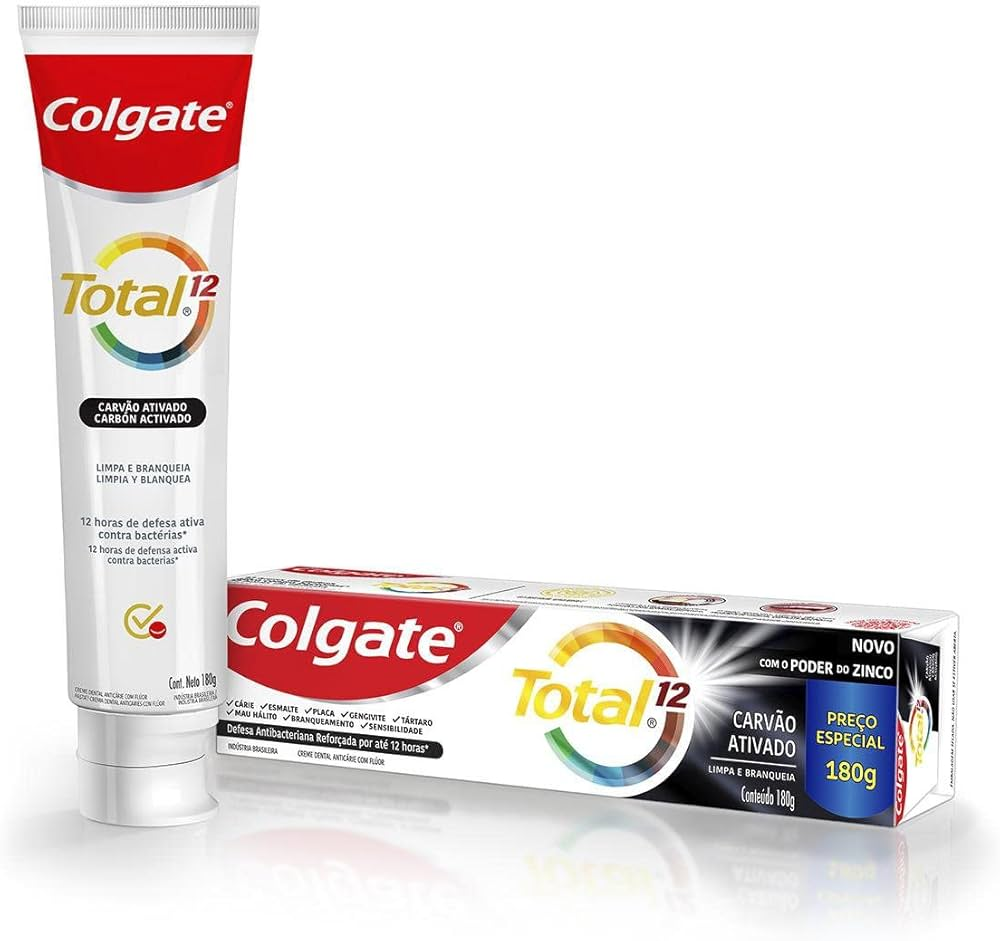
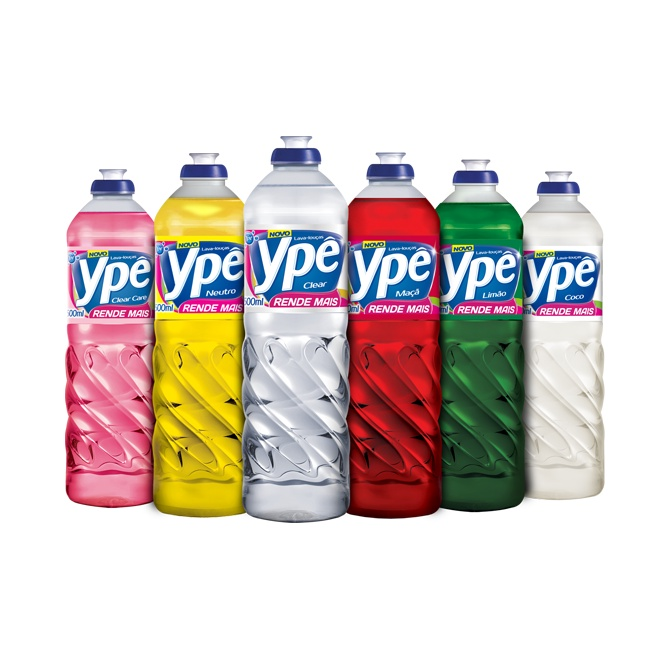

Produtos de Higiene e Limpeza
Uma variedade de produtos de limpeza e higiene para deixar sua casa sempre limpa e organizada.
Uma variedade de produtos de limpeza e higiene para deixar sua casa sempre limpa e organizada.
Colgate Total 12 90g
Colgate Total 12 é uma pasta de dente de uso diário que oferece proteção completa para a saúde bucal por até 12 horas. Com 90g, ajuda a combater placas bacterianas, cáries, gengivite, mau hálito e manchas, enquanto fortalece o esmalte dos dentes e protege contra a sensibilidade.
R$ 11,90
Detergente Ype 500ml
O Detergente Ypê é um produto de limpeza essencial para a cozinha. Com 500ml, ele é eficiente na remoção de gorduras e sujeiras de louças, talheres e panelas, deixando tudo limpo e brilhante.
R$ 2,39